本系统是一套完整落地的智慧课堂行为分析解决方案：通过教室摄像头（或上传图片/视频）实时检测学生 举手、听讲、睡觉、 玩手机、趴桌低头 五类课堂行为， 异常行为自动触发预警并落库，配合统计看板呈现班级学情趋势。
系统包含四大子系统：Vue3 前端（7+ 功能页面）、SpringBoot 业务后端（RBAC 权限 + 记录/预警/统计）、 Flask AI 推理服务（GPU 加速）、YOLO 训练管线（多数据源合并 + 一键训练部署）。支持用自己的数据集重训练并热替换线上模型。
| 职责划分 | 说明 |
|---|---|
| 前端 | 登录鉴权、按角色显隐菜单、三路检测交互、预警中心、ECharts 看板、用户/日志管理；深色模式与色弱友好模式 |
| SpringBoot | JWT 签发校验、RBAC 拦截器、检测代理转发与记录落库、AI 预警回调接收、班级/课程/用户/日志 CRUD、按天聚合统计 |
| Flask AI | YOLO11 模型加载与 GPU 推理、图片/视频(异步任务)/摄像头逐帧检测、MJPEG 流输出、预警去抖+回调重试+本地日志兜底、模型热重载 |
| 训练管线 | 4 数据源类别重映射合并（7922→13996 图）、train/val 确定性切分、一键训练、best.pt 自动部署 |
以下为系统实际运行截图（1600×900 @1.5x，自动登录抓取）。
JWT 登录，全屏居中卡片；演示账号提示。未登录访问任意页面自动跳转至此。
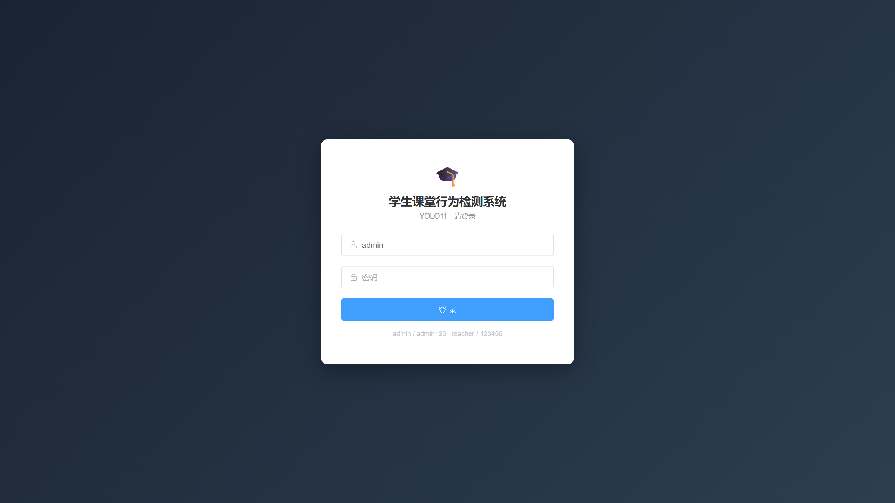
摄像头逐帧检测 + MJPEG 推流，右侧实时统计各行为数量；支持「演示模式」标识与预警说明。
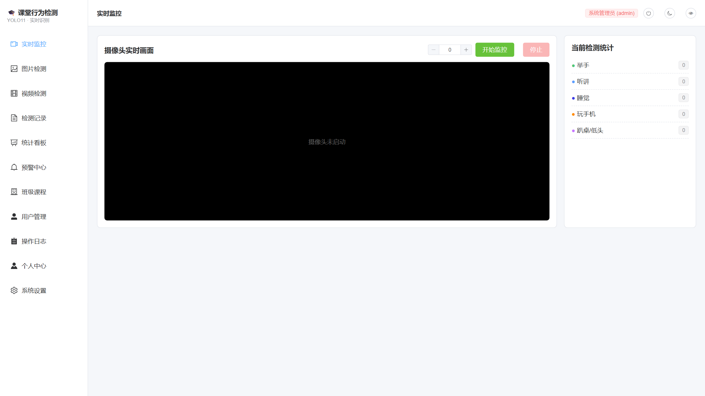
拖拽/选择上传教室照片，返回标注框可视化图 + 五类行为计数 + 逐框置信度表格。
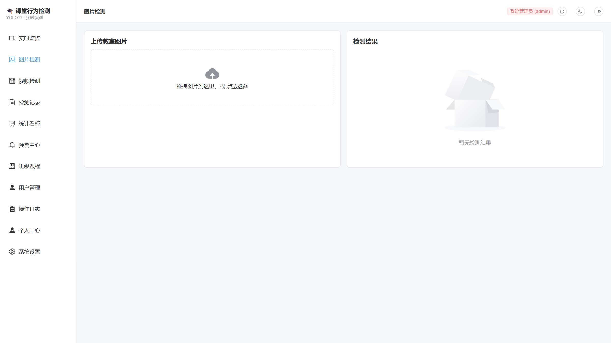
上传课堂视频，异步任务 10fps 抽帧推理，进度条实时反馈，输出标注视频与峰值统计。
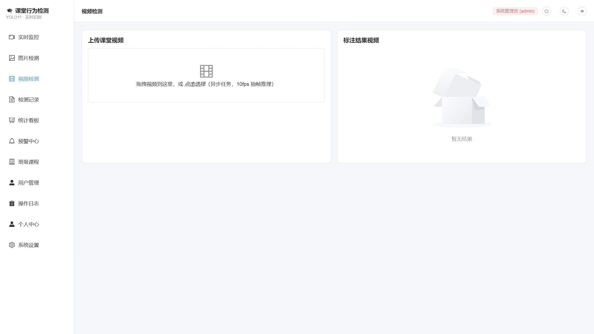
睡觉/玩手机/趴桌持续命中自动生成预警事件，支持确认处理流程与计数快照追溯。
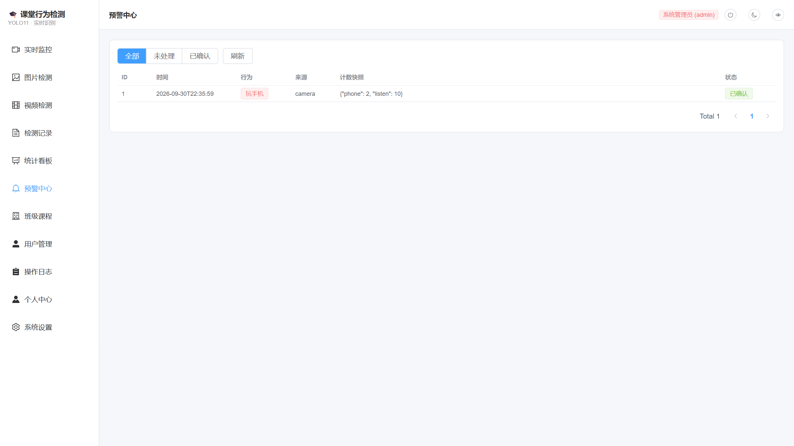
ECharts 行为趋势折线图（近7天/30天切换），五类行为累计卡片，数据与检测记录联动。
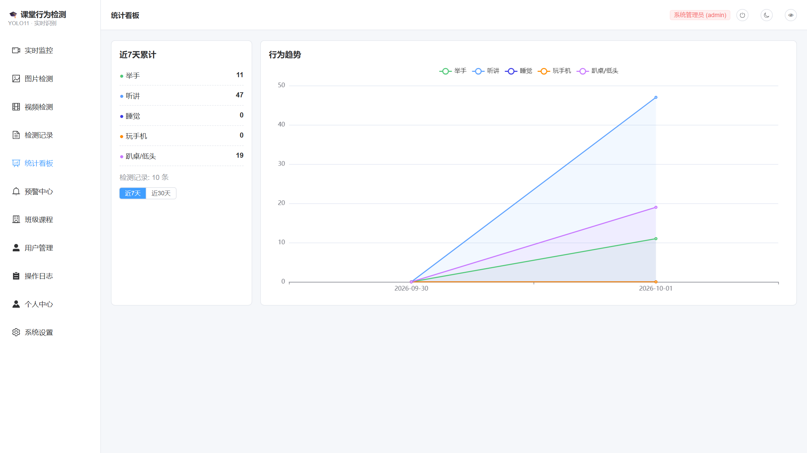
每次检测全量落库：来源、五类计数、总人数、标注图链接，支持按来源筛选与分页。
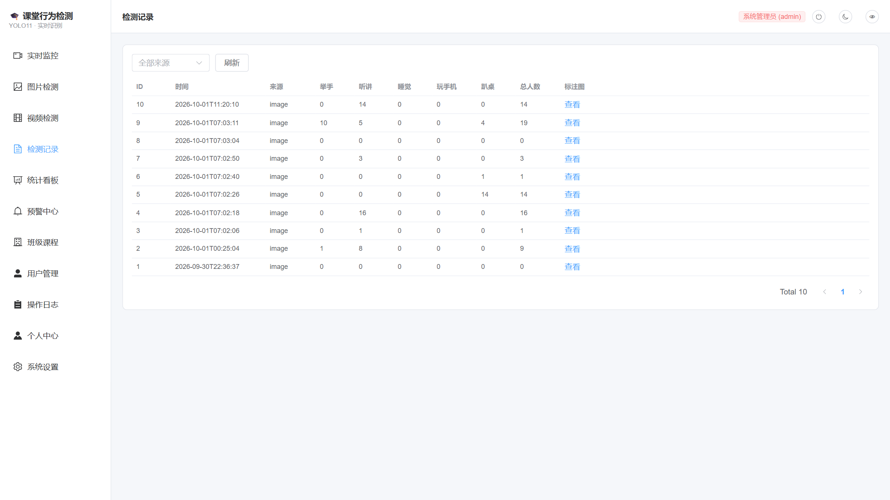
RBAC 用户 CRUD：创建用户、重置密码、角色调整（admin/teacher/viewer）、启用禁用。
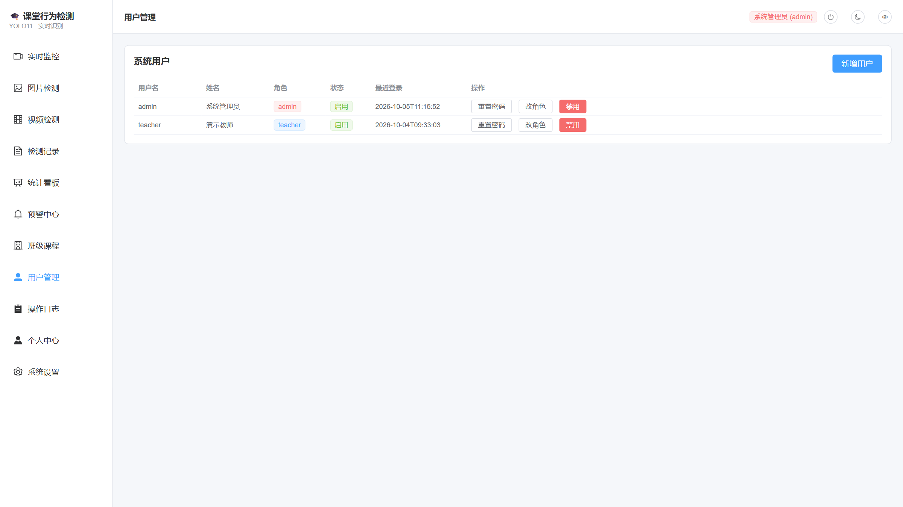
登录/登出/检测/用户变更/越权尝试（DENIED）全量审计，时间倒序分页。
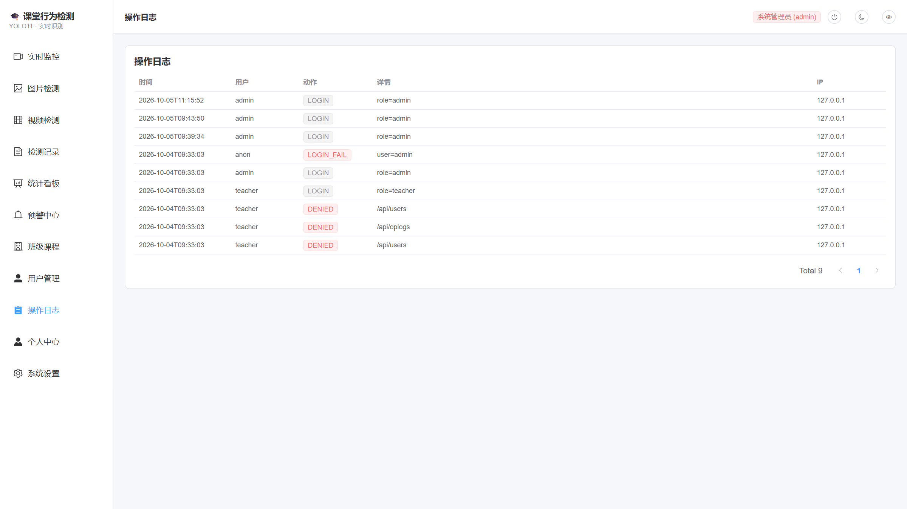
班级/课程维护；个人中心展示角色与权限点，支持自助修改密码（bcrypt 校验）。
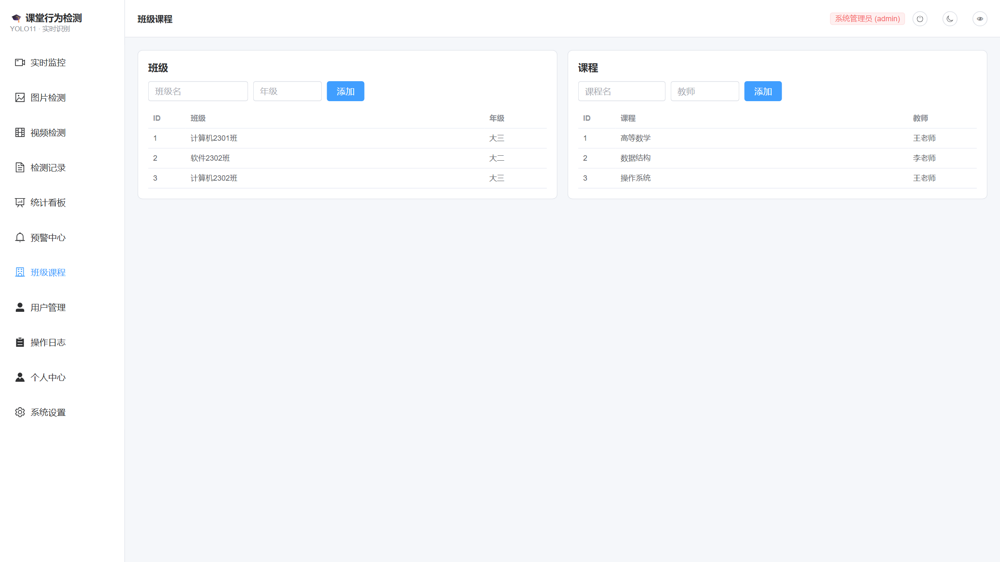
模型服务状态总览（设备/模式/权重文件）、一键热重载训练产物、深色与色弱模式、布局缩放。
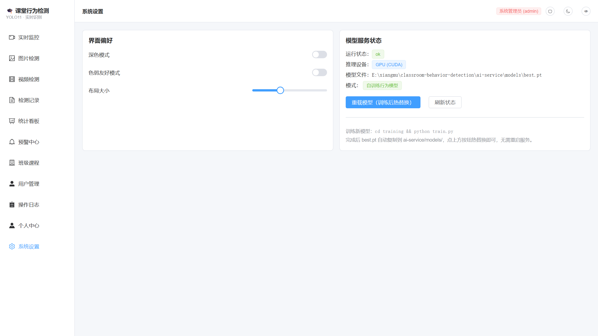
| 前端 | Vue 3.5 TypeScript Element Plus Pinia Vue Router ECharts Axios Vite 5 |
|---|---|
| 后端 | Spring Boot 3.3 MyBatis-Plus 3.5 JJWT 0.12 BCrypt MySQL 8 |
| AI 服务 | Python 3.10 Flask Ultralytics YOLO11 PyTorch 2.5 (CUDA 12.1) OpenCV |
| 训练 | transfer-learning AMP 混合精度 多数据源类别重映射 SCB/CSB 公开数据集 |
| 工程化 | 免安装 JDK/Maven/Node 工具链 清华/阿里镜像加速 Playwright 自动截图 一键 install/start/stop |
| 类别 | 精度 P | 召回 R | mAP50 |
|---|---|---|---|
| 举手 raise_hand | 0.71 | 0.82 | 0.806 |
| 听讲 listen | 0.63 | 0.56 | 0.505 |
| 全体 | 0.45 | 0.46 | 0.439 |
※ sleep/phone 类因公开数据稀缺样本不足（0/82 框），趴桌低头 0.005 为已知短板，可通过补充 Roboflow 标注数据迭代。
| 接口 | 说明 | 权限 |
|---|---|---|
| POST/api/auth/login | 登录，返回 JWT + 权限点 | 公开 |
| POST/api/auth/change-password | 修改自己密码（校验旧密码） | 登录 |
| POST/api/detect/image | 图片检测（代理 Flask）+ 记录落库 | detect |
| POST/api/detect/video | 视频检测，返回异步 taskId | detect |
| POST/api/detect/stream/start|stop | 摄像头流控制（MJPEG 由前端直连 5002） | detect |
| GET/api/detect/records · /stats | 记录分页 / 按天聚合统计 | 登录 |
| POST/api/alerts/ai-callback | Flask 预警回调落库（内部） | 内部 |
| POST/api/alerts/{id}/confirm | 预警确认处理 | alert_confirm |
| GET/api/users · POST/api/users | 用户列表 / 新增（重置密码、启停用、改角色） | user_manage |
| GET/api/oplogs | 操作日志分页 | oplogs |
| POST/api/detect/model/reload | 热重载训练后的新模型 | config_edit |
Windows 下双击 scripts/ 里的 .bat，或 git-bash 执行：
首次启动 AI 服务自动下载 yolo11n.pt 进入演示模式；用自己的数据集训练：
cd training && python merge_datasets.py && python train.py --epochs 100，
完成后 best.pt 自动部署，前端「系统设置 → 重载模型」热替换生效。